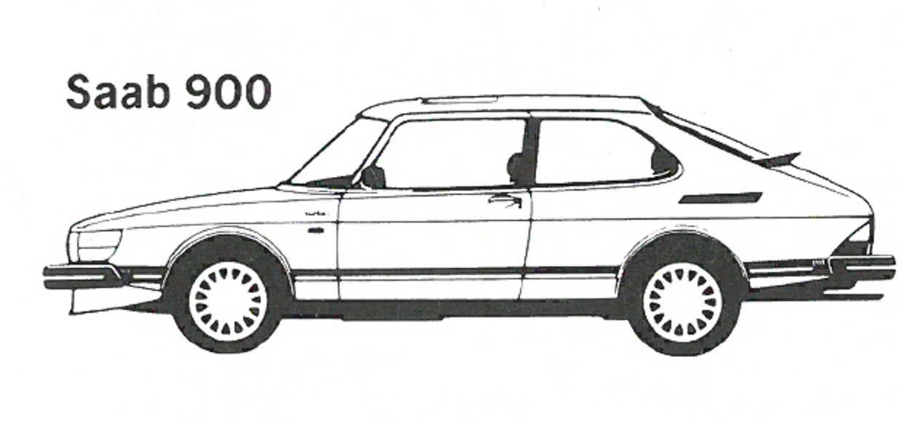
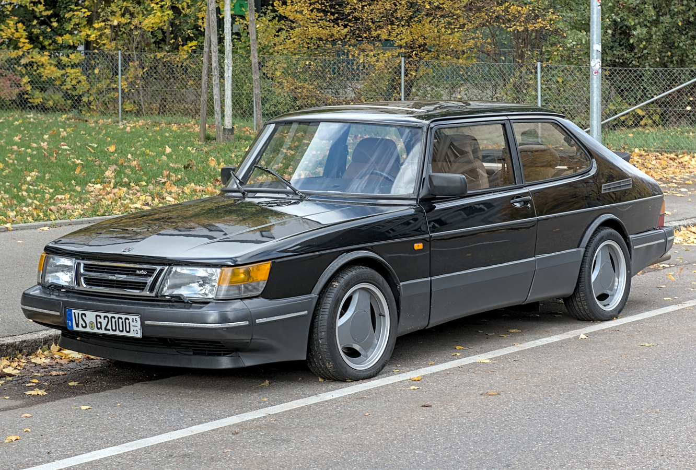

Saab 900 Classic · profile refinement
The existing hood-corrected model, refined in place. Cabin and windscreen moved forward; longer, calmer roof; defined roof/hatch break; shorter quarter glass and planar side windows. Same wheels, wheelbase, nose and overall dimensions.
Real references, no AI image target. The manufacturer sketch is a small pre-facelift illustration; exact 1988 metric shape approval is unavailable. Errors below are comparison pixels, not verified millimetres. Hood error rises slightly while windscreen, roof and rear improve. Human recognition judgement remains essential.
| Measurement | Before | After |
|---|
| Global IoU | 0.900 | 0.915 |
| Hood profile error (px) | 6.093 | 7.534 |
| Windscreen profile error (px) | 25.616 | 10.341 |
| Roof profile error (px) | 9.925 | 4.338 |
| Rear profile error (px) | 4.187 | 2.196 |
7,758 triangles · 47 meshes · 8 materials. Closed-body/normal/degeneracy/BVH checks and actual GLB export/reimport pass. Side-glass planarity is measured from real vertices; the shape change is not simulated by materials. Remaining compromises: wheel-well smoothing, simplified lamp/seam details, opaque glazing. No game integration or physical iPad FPS claim.
Side
Front Three Quarter
Rear Three Quarter
Cabin / windshield / side-glass mass
Wheelbase-registered reference comparisons
Red: manual real-reference contour. Cyan: actual orthographic Blender silhouette. Same registration and regions before/after.
Reference evidence
Saab-Scania manufacturer illustration, copyright 1985, small technical-review excerpt; Alexander Migl / Wikimedia Commons front three-quarter, CC BY-SA 4.0. Full source register linked above. The photograph checks facelift form qualitatively; perspective is not used as exact geometry.

